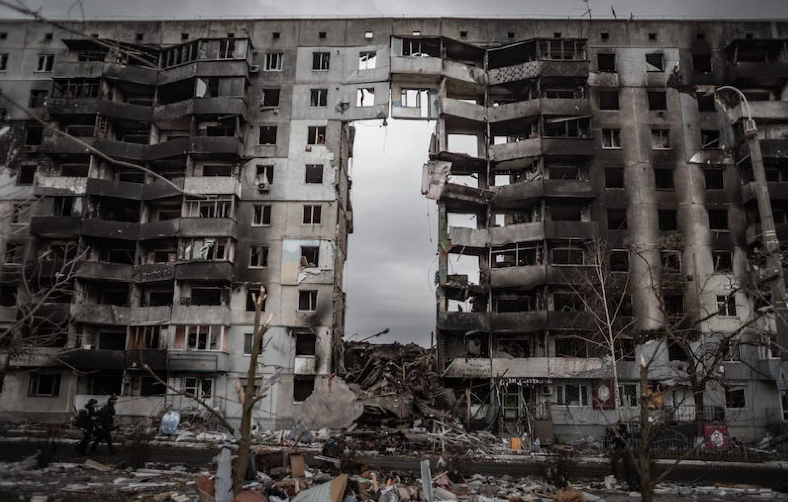
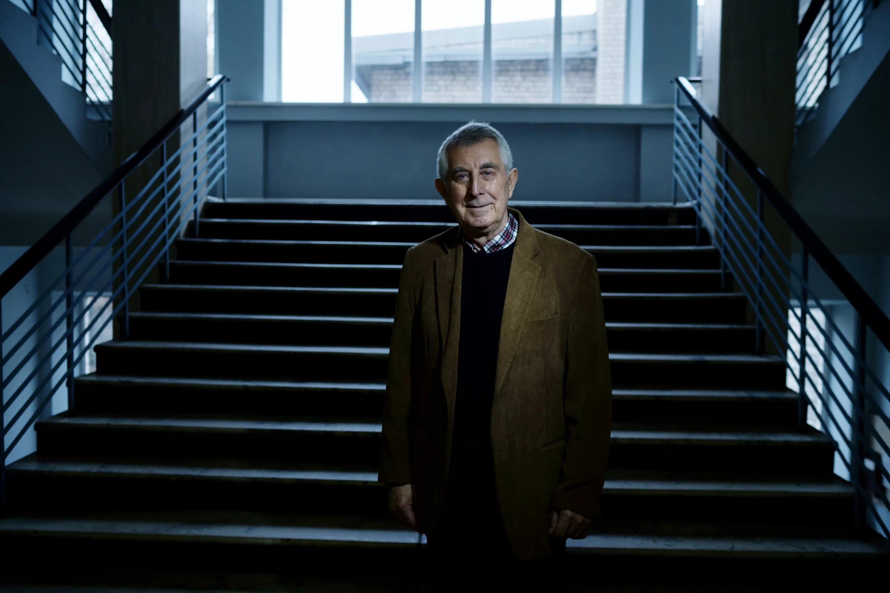
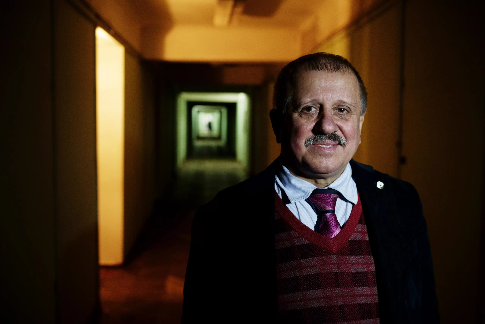
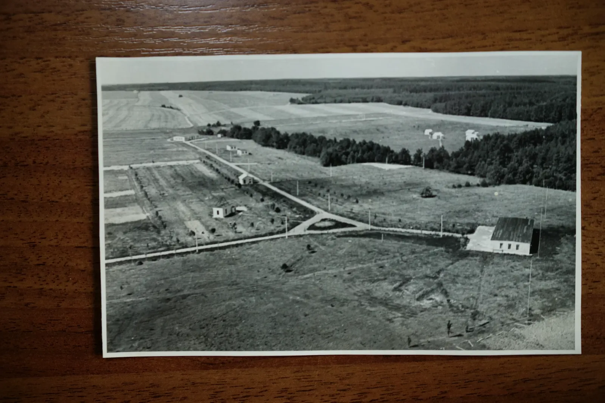
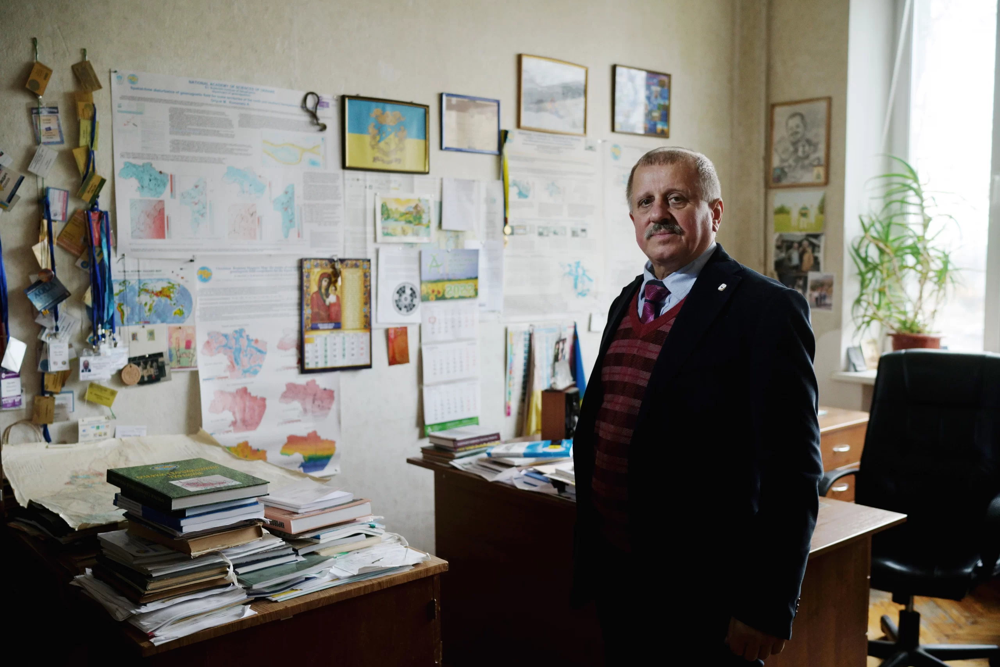

Magnetic Attraction of Occupiers
20.03.23
The Seraphim Subbotin Institute of Geophysics is quite large and branched out throughout the country. This is due to the fact that the object of its research is global: it studies the physical processes of the entire planet. The institute has 12 departments studying the subsurface, gravity, magnetic field, and seismic activity. The institute owns three magnetic observatories and 38 seismic stations, and the institute also conducts research in Antarctica at the Vernadskyi Research Base.
The study of the planet is the task of the entire humankind, which is why the institute’s monitoring stations for seismic activity and magnetic field are integrated in the international systems. However, Russian occupiers are not particularly interested in such matters, so the Kyiv magnetic observatory, located in the town of Dymer, suffered from theft and vandalism.
We spoke with the director of the institute, Oleksandr Kendzera, and the head of the geomagnetism department, Mykhailo Orliuk, to find out how the institution functions in wartime conditions.

The director is engaged in seismology, so he mostly talked about his field of research. In Soviet times, the seismic resistance of buildings was assessed by the housing exploitation commission, that is, they mostly eyeballed it. Now, the institute has developed a comprehensive system of evaluation and design, which is quite important for Ukraine today. We are in the impact area of one of the three most active seismic zones on the planet (Vranca, in Romania; earthquakes associated with this zone are mentioned even in The Tale of Bygone Years (Primary Chronicle).* For example, Odesa is located in the area with the possibility of an eight-point earthquake.
There is a stereotype in society that the thicker the walls and the lower the house, the more stable it is. This is a misconception, since the greatest danger from an earthquake is if its waves resonate with the vibrations of the structure. The thickness of the walls can hardly save you in that case. That is why it is essential to take into account the distance to the seismically active zone, to assess the strength of the soil before construction in order to study possible seismic waves and avoid resonance.
The institute develops national building regulations, engages in earthquake-resistant design for nuclear and hydroelectric power plants, high-rise buildings, stadiums, and other structures. Scientists improved [1] the project of the confinement for the power unit 4 of Chornobyl NPP developed by Americans, since the latter failed to take into account its proximity to the Vranca zone.
Unfortunately, one of the institute’s projects is particularly relevant today. It is the methodology for assessing a damaged building — whether it can be repaired or should be demolished. Monitoring systems are installed next to the house to determine whether the building is suitable to repair.
Only seven of the institute's 300 employees went abroad after the large-scale invasion, but in addition to the magnetic observatory near Kyiv, the institute also lost an extensometer station in Zakarpattia, which measured the movement of tectonic plates with extreme accuracy. It is built in a deep cave, for a stable temperature and a stable stone base — these two factors are crucial for the measurements. Zakarpattia is the farthest area of Ukraine from the frontline, but a diversion group broke in there, destroying expensive equipment.
Seismological stations were almost unharmed. They record any ground vibrations, and therefore record every explosion from Russian attacks.
We talked to Mykhailo about magnetic research.

The Dymer observatory was built in 1958. The place was chosen farther away from civilization, which affects the measurements. The building is made without iron to minimize magnetic effects, even the nails are copper. Before the occupation, the observatory had modern digital equipment and provided very accurate measurement results. However, scientists are currently working with data from three other observatories, located in Odesa, Lviv and at the Vernadskyi Research Base in Antarctica.

The Dymer observatory employed 7 scientists and 14 security guards, since the station covers 26 hectares. Employees saved the most valuable equipment. As for the rest, Russians treated it with their usual logic — stole equipment they understood, broke what they didn’t. They set up fire positions on the territory and left behind a pile of garbage.
The study of the Earth's magnetic field is crucial, because it changes all the time, and therefore the magnetic inclination also changes (the magnetic pole does not coincide with the geographic one). The accuracy of this indicator affects navigation and — something that has sadly become acutely relevant for us — the accuracy of firing. In case of problems with GPS, when you have to turn to compasses, this indicator is key.
In addition, the geomagnetism department prepares magnetic maps, which are used to develop a magnetic model of the Earth's crust. With the help of these models, you can estimate what rocks lie below the surface, including minerals.
Scientists have also discovered [2] a correlation between the magnetic field and the spread of viral diseases, in particular the Sars-CoV-2 coronavirus. The magnetic field in different parts of the Earth varies greatly, from 20,000 nT (nanoteslas) in the South Atlantic region to 55,000 nT in Europe. The disease spreads faster where the magnetic field is either very weak or very strong. However, this question needs to be studied in more detail to find out whether it is a coincidence or if there’s a causal relationship here.

In the conversation, Mykhailo refuted the stereotype about magnetic storms. Their power compared to man-made magnetic influence is minimal. A metro car is equipped with four electric motors. During the start and stop of movement, the magnetic field reaches 150,000–200,000 nT (the natural field in Ukraine is 50,000 nT).
For further studies of the magnetic field in Kyiv oblast, the observatory in Dymer needs to be restored, because the data from this region are not recorded at the moment. Observations had been conducted here continuously since 1958. Mykhailo says that the international community is ready to help with the restoration of the facility, but the threat from the Belarusian direction remains.
Natural phenomena investigated by the Subbotin Institute of Geophysics are also characteristic of the Russian occupiers. First, they are drawn to Ukraine by imperial magnetism. Second, after their arrival, the territory looks like it has been ravaged by a devastating earthquake. But we still hope that the screen in the central hallway of the institute studying seismic activity will no longer record explosions, and the institution itself will be able to resume the study of our planet’s natural phenomena.
This report has been developed within the project supported by the Public Affairs Section of the U.S. Embassy in Ukraine. The views of the authors do not necessarily reflect the official position of the U.S. government.